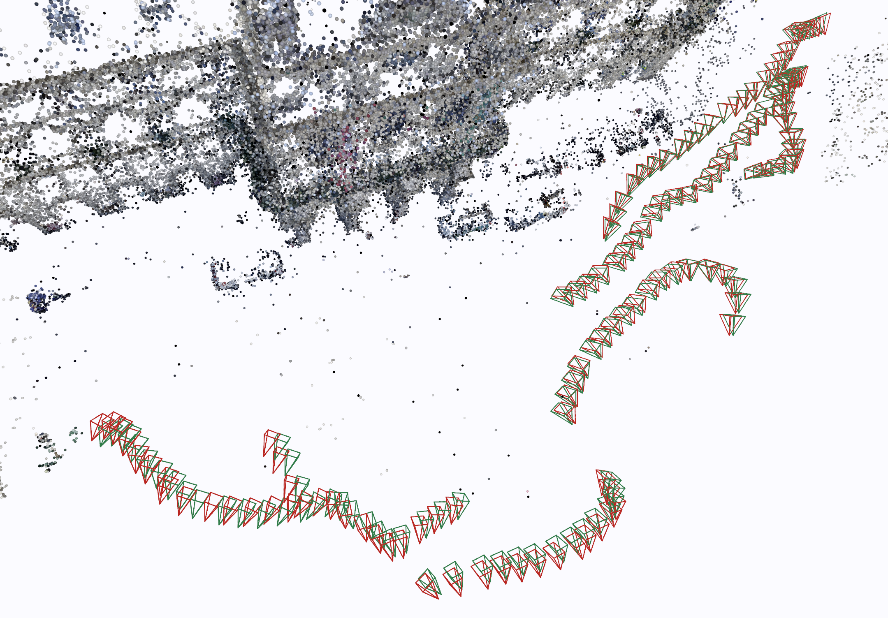

EPO: Boosting 3D Foundation Models with Edge-based Pose Optimization
1Graz University of Technology 2Sony Europe
ECCV 2026EPO is a trackless optimization framework specifically designed to enhance Structure-from-Motion reconstructions generated by 3D foundation models, without the need for explicit feature tracks. We demonstrate that EPO achieves geometric precision comparable to, or even exceeding, traditional Bundle Adjustment, while reducing runtime by 70-80% and operating efficiently on consumer-grade hardware. Webpage is available here.